Cos'è/come Funziona? Il progetto è un termoigrometro/orologio
digitale con Arduino, programmabile tramite porta COM del PC.
Componenti:
Arduino Nano e sua base/PCB
Cavi Jumper
Display LCD 16x2 I2C
Modulo RTC: DS3231
Modulo TEMP: DHT11
Scatola stampata in 3d/ di derivazione
Arduino Nano
Base Arduino Nano
Cavi Jumper
Scatola / contenitore
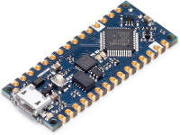
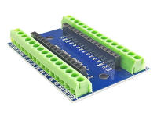
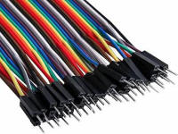
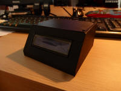
va
bene anche un ard. UNO
***
***
come preferisci
Display LCD 16x2 I2C
RTC DS3231
TEMP DHT11
Alimentatore / Cavo USB
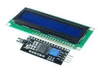
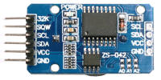
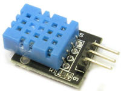
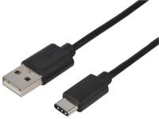
deve essere i2c! o adatt. cod.
non
testato con altri mod.
non
testato con altri mod.
Cavo USB e solo a 5V!!!
tutti i materiali sono
disponibili su amazon o su aliexpress.
Collegamento:
Segui il collegamento nel seguente schema.
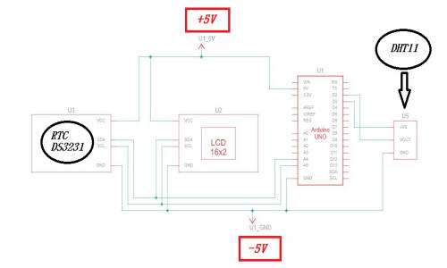
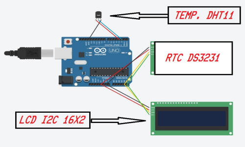
Istruzioni
1. Collega Arduino come descritto sopra.
2. Apri Arduino IDE (se non l'hai già installato,
). 3. Apri lo sketch (.INO) nel file zip del progetto.
4. Collega Arduino al Computer.
5. Installa le librerie necessarie.
6. Compila e carica il codice sull'arduino.
Downloads
Scarica tutti i file per programmare il termoigrometro qui. (ARCHIVIO ZIP - 7Kb)
Risultato:
FRN1.JPEG
FRN2.JPEG
INT1.JPEG
INT2.JPEG
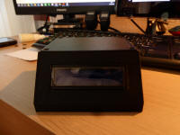
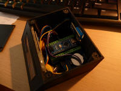
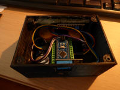
vista frontale 1
vista frontale 2
vista interna 1
vista interna 1
SCH1.JPEG
SCH6.JPEG
SCH7.JPEG
SCH8.JPEG
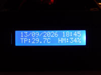
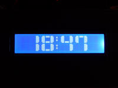
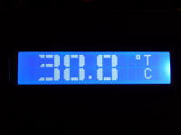
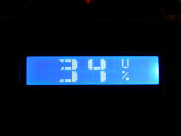
schermata 1
schermata 6
schermata 7
schermata 8
sono disponibili anche le
schermate 2, 3, 4, 5. si possono abilitare con il
programma da PC.
Grazie!
Il materiale può essere usato liberamente per scopi
personali o didattici,
ma non può essere redistribuito o ripubblicato altrove.


{kind=link}
{kind=link}